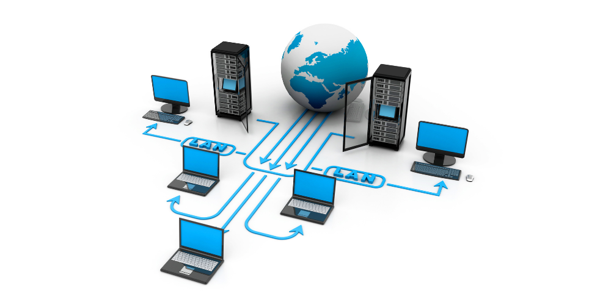

Introducción a las redes de computadores
Las redes de computadores son sistemas que permiten la interconexión de múltiples dispositivos para compartir recursos, información y servicios. Estas redes pueden ser locales (LAN), metropolitanas (MAN) o de área amplia (WAN), y utilizan diversos protocolos y tecnologías para garantizar la comunicación eficiente y segura entre los dispositivos conectados.
En una red de computadores, los dispositivos pueden incluir computadoras, servidores, impresoras, routers y otros equipos de red. La comunicación entre estos dispositivos se realiza a través de cables, fibra óptica o conexiones inalámbricas, dependiendo del tipo de red y de los requisitos de velocidad y alcance.